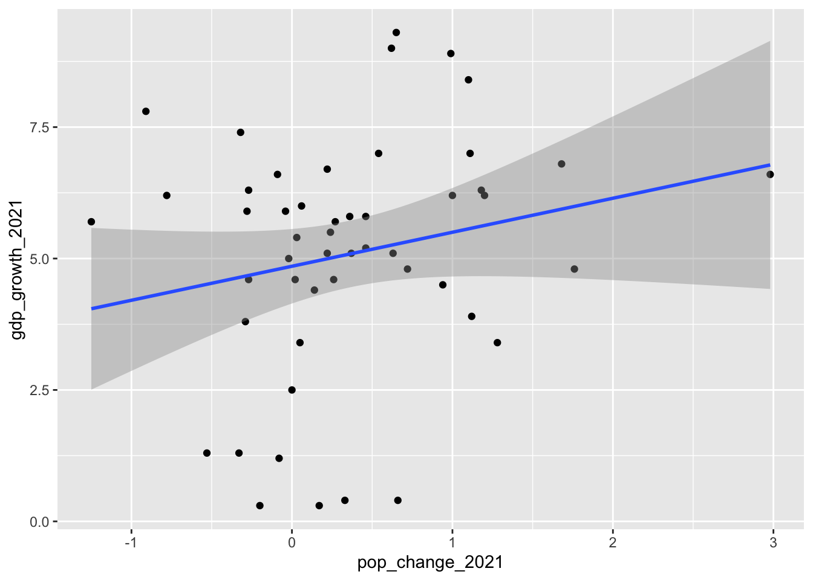
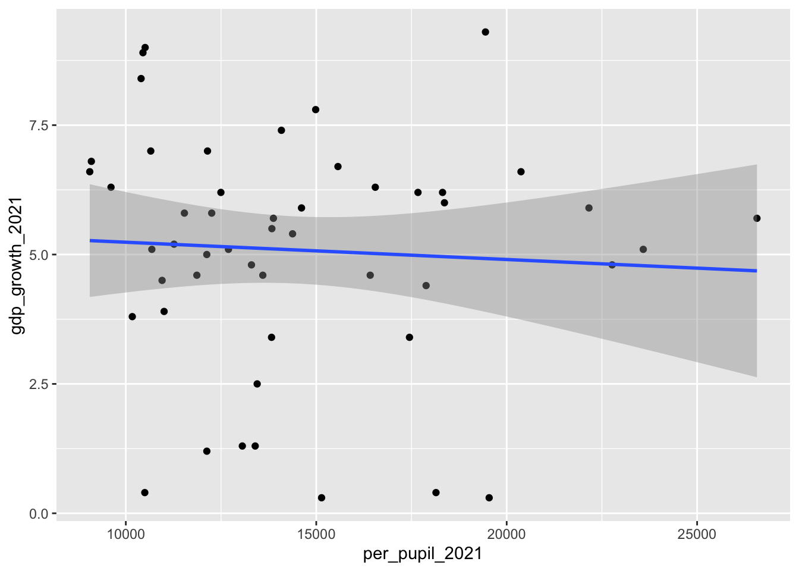

library(janitor)
library(tidyverse)
library(corrr)31 Basic Stats: Linear Regression and The T-Test
Many stories that rely on data use basic descriptive statistics: journalists often are calculating rates, creating rankings and computing averages. That’s often in service of finding patterns that could yield interesting stories, but there are useful ways to go beyond patterns and try to establish whether there is a relationship between two things and, if so, how strong that relationship is.
Here’s an example: an elected official claims that more money spent on education leads to greater economic growth and people moving into the state. How can we test whether those ideas - education spending, economic growth and population growth - are related? How do we estimate how strong any relationship between them is? To do that, we’ll use two slightly more advanced statistical analysis methods to look for patterns: linear regression, to examine relationships, and a t.test, to confirm the statistical validity of an average between two groups. So, let’s do that here.
We’ll be using state-by-state data on education spending, economic activity and population growth from 2021, plus the presidential winner from the 2020 election.
First, let’s load libraries. We’re going to load janitor, the tidyverse and a new package, corrr, which will help us do linear regression a bit easier than base R.
Now let’s load the data we’ll be using. It has five fields:
- state
- per_pupil_2021: education spending per pupil in 2021.
- gdp_growth_2021: the percentage growth in Gross Domestic Product in 2021.
- pop_change_2021: the percentage change in population in 2021.
- vote_2020: the winner of the state’s popular vote in the 2020 presidential election.
state_data <- read_csv("data/regression_data.csv")Rows: 50 Columns: 5
── Column specification ────────────────────────────────────────────────────────
Delimiter: ","
chr (2): state, vote_2020
dbl (3): per_pupil_2021, gdp_growth_2021, pop_change_2021
ℹ Use `spec()` to retrieve the full column specification for this data.
ℹ Specify the column types or set `show_col_types = FALSE` to quiet this message.state_data# A tibble: 50 × 5
state per_pupil_2021 gdp_growth_2021 pop_change_2021 vote_2020
<chr> <dbl> <dbl> <dbl> <chr>
1 Alabama 10683 5.1 0.37 Trump
2 Alaska 19540 0.3 0.17 Trump
3 Arizona 9611 6.3 1.18 Biden
4 Arkansas 11266 5.2 0.46 Trump
5 California 14985 7.8 -0.91 Biden
6 Colorado 12255 5.8 0.46 Biden
7 Connecticut 22769 4.8 0.72 Biden
8 Delaware 17448 3.4 1.28 Biden
9 Florida 10401 8.4 1.1 Trump
10 Georgia 12145 7 0.54 Biden
# ℹ 40 more rows32 Linear Regression
Let’s start with this question: did states that had the greatest population growth and see GDP growth (our economic activity measure)? We can answer it by examining the relationship or correlation between two variables, pop_change_2021 and gdp_growth_2021. How much do they move in tandem?
Let’s start by plotting them to get a sense of the pattern.
state_data |>
ggplot() +
geom_point(aes(x=pop_change_2021,y=gdp_growth_2021)) +
geom_smooth(aes(x=pop_change_2021,y=gdp_growth_2021), method="lm")`geom_smooth()` using formula = 'y ~ x'
It’s a bit messy, but we can see something of a pattern here in the blob of dots. Generally, the dots are moving from the lower left (states with lower population growth) to upper right (states with higher population growth). The blue “line of best fit” shows the general direction of the relationship. It appears that those two things might be at least somewhat related.
Let’s test another variable, the per-pupil education spending amount per state.
state_data |>
ggplot() +
geom_point(aes(x=per_pupil_2021,y=gdp_growth_2021)) +
geom_smooth(aes(x=per_pupil_2021,y=gdp_growth_2021), method="lm")`geom_smooth()` using formula = 'y ~ x'
This one is messier. There may be a slight downward slope in this blob of dots, but it’s not quite as apparent. It seems less certain that there’s a relationship between these two variables.
We can be a bit more precise by calculating a statistic called the correlation coefficient, also called “r”. r is a value between 1 and -1. An r of 1 indicates a strong positive correlation.
An increase in air temperature and air conditioning use at home is strongly-positively correlated: the hotter it gets, the more we have to use air conditioning. If we were to plot those two variables, we might not get 1, but we’d get close to it.
An r of -1 indicates a strong negative correlation. An increase in temperature and home heating use is strongly negatively correlated: the hotter it gets, the less heat we use indoors. We might not hit -1, but we’d probably get close to it.
A correlation of 0 indicates no relationship.
All r values will fall somewhere on this scale, and how to interpret them isn’t always straightforward. They’re best used to give general guidance when exploring patterns.
We can calculate r with a function from the corrr package called “correlate()”. First, we remove the non-numeric values from our state_data (state and vote_2020), then we correlate.
state_data |>
select(-state, -vote_2020) |>
correlate()Correlation computed with
• Method: 'pearson'
• Missing treated using: 'pairwise.complete.obs'# A tibble: 3 × 4
term per_pupil_2021 gdp_growth_2021 pop_change_2021
<chr> <dbl> <dbl> <dbl>
1 per_pupil_2021 NA -0.0599 -0.411
2 gdp_growth_2021 -0.0599 NA 0.211
3 pop_change_2021 -0.411 0.211 NA The table this function produces generally confirms our interpretation of the two graphs above. The relationship between a state’s gdp_growth_2021 and per-pupil education spending is slightly negative at -0.06 (on a scale of -1 to 1), and the relationship isn’t particularly strong. That’s why the second graphic above was messier than the first.
The relationship between population growth and GDP growth seems slightly positive at 0.21 (on a scale of -1 to 1), but there are a lot of dots falling outside that line of best fit in our scatterplot.
The relationship between a state’s per-pupil education spending and population growth is a bit stronger (in a negative direction), if moderate, -.41 (on a scale of -1 to 1). Is this finding statistically valid? We can get a general sense of that by calculating the p-value of this correlation, a test of statistical significance. For that, we can use the cor.test function.
cor.test(state_data$per_pupil_2021, state_data$pop_change_2021)
Pearson's product-moment correlation
data: state_data$per_pupil_2021 and state_data$pop_change_2021
t = -3.1256, df = 48, p-value = 0.00301
alternative hypothesis: true correlation is not equal to 0
95 percent confidence interval:
-0.6187516 -0.1500577
sample estimates:
cor
-0.4112291 This output is quite a bit uglier, but for our purposes there are two key pieces of information from this chunk of unfamiliar words. First, it shows the correlation calculated above: r -0.4112291. Two, it shows the p-value, which is 0.00301. That’s pretty low, as far as p-values go, which indicates that there’s a very slim chance that our finding is a statistical aberration; that is, that it happened solely by chance.
Now let’s test another one, the relationship between the per_pupil_2021 and gdp_growth_2021.
cor.test(state_data$per_pupil_2021, state_data$gdp_growth_2021)
Pearson's product-moment correlation
data: state_data$per_pupil_2021 and state_data$gdp_growth_2021
t = -0.41572, df = 48, p-value = 0.6795
alternative hypothesis: true correlation is not equal to 0
95 percent confidence interval:
-0.3326975 0.2221550
sample estimates:
cor
-0.05989652 Again, it shows our r value of -0.06, which was weaker. And the p-value here is a much larger 0.6795. That indicates a much greater chance of our finding being a statistical aberration, high enough that I wouldn’t rely on its validity.
p < .05 is accepted in many scientific disciplines – and by many data journalists – as the cutoff for statistical significance. But there’s heated debate about that level, and some academics question whether p-values should be relied on so heavily.
And to be clear, a low p-value does not prove that we’ve found what we set out to find. There’s nothing on this graph or in the regression model output that proves that education spending alone has a direct impact on GDP growth or population change. It’s entirely possible that there’s some other variable – or variables – not considered here that explain this pattern.
All we know is that we’ve been able to explore the relationship between multiple variables, and the results can help us develop better questions or provide some context to the elected official’s claims. One of the best uses of techniques like regression and significance testing is to see just how much stock we should put into a claim or conclusion.
33 T-tests
Let’s suppose we want to ask a related set of questions: did states won by Donald Trump have higher than average GDP growth than states won by Joe Biden? Or did states won by Biden have greater education spending than those won by Trump?
We can do this because, in our data, we have a column with two possible categorical values, Biden or Trump, for each state.
We could just calculate the averages like we’re used to doing.
state_data |>
group_by(vote_2020) |>
summarise(
mean_gdp_growth = mean(gdp_growth_2021),
mean_per_pupil_education = mean(per_pupil_2021),
mean_pop_growth = mean(pop_change_2021)
)# A tibble: 2 × 4
vote_2020 mean_gdp_growth mean_per_pupil_education mean_pop_growth
<chr> <dbl> <dbl> <dbl>
1 Biden 5.87 16579. 0.177
2 Trump 4.30 12379. 0.550Examining this, it appears that in all three categories there’s a difference.
The average GDP growth was higher in Biden states than Trump states (5.8% to 4.3%). The average amount of per-pupil education spending in Biden states was larger – $16,578 – than Trump states – $12,378. And states that backed Trump saw higher population growth in 2021. Should we report these as meaningful findings?
A t-test can help us answer that question. It can tell us where there’s a statistically significant difference between the means of two groups. Have we found a real difference, or have we chanced upon a statistical aberration? Let’s see by calculating it for the population growth.
t.test(pop_change_2021 ~ vote_2020, data = state_data)
Welch Two Sample t-test
data: pop_change_2021 by vote_2020
t = -1.828, df = 45.476, p-value = 0.07411
alternative hypothesis: true difference in means between group Biden and group Trump is not equal to 0
95 percent confidence interval:
-0.78342389 0.03782389
sample estimates:
mean in group Biden mean in group Trump
0.1768 0.5496 We see our two means, for Trump and Biden, the same as we calculated above. The t-value is approximately -1.8, the p-value here is 0.07411, both of which should give us pause that that we’ve found something meaningful. More on t-tests here
Let’s try per-pupil education spending.
t.test(per_pupil_2021 ~ vote_2020, data = state_data)
Welch Two Sample t-test
data: per_pupil_2021 by vote_2020
t = 4.2494, df = 39.029, p-value = 0.0001289
alternative hypothesis: true difference in means between group Biden and group Trump is not equal to 0
95 percent confidence interval:
2200.814 6199.026
sample estimates:
mean in group Biden mean in group Trump
16578.80 12378.88 This is more promising. T is much stronger – about 4.2 – and the p-value is a very low 0.0001. Both of these should give us assurance that we’ve found something statistically meaningful. Again, this doesn’t prove that spending more on education means that voters there will back Democrats for president, or that voting for Donald Trump led to population growth. It just suggests there’s a pattern worth following up on.